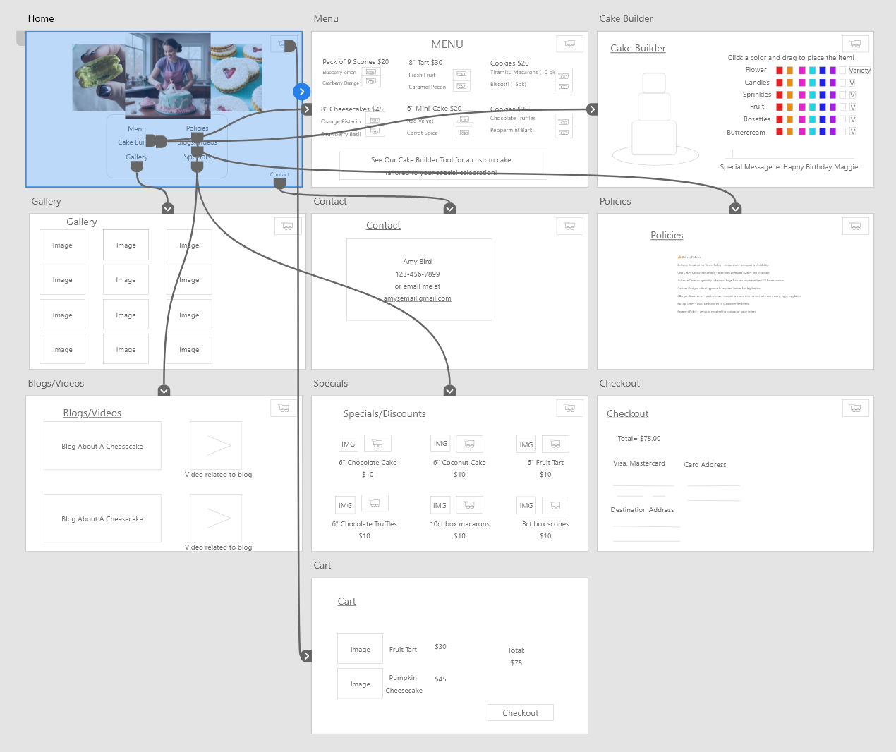
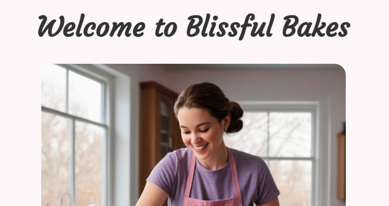

Front-end development & UX
Blissful Bakes
From an Adobe XD prototype to a responsive bakery website, with a live demonstration.


Project Overview
Blissful Bakes is a multipage bakery website designed to help customers discover products, explore previous work, and communicate their interests when planning an order. The project began with an interactive Adobe XD prototype mapping navigation between the menu, gallery, custom cake builder, specials, and contact areas. I then developed the website using HTML, CSS, and JavaScript, translating planned screens into a functioning browser experience. The design emphasizes straightforward navigation, visual product presentation, and a consistent bakery identity. Together, the prototype and published site show my approach to combining user experience planning with practical front-end web development for a small business.
Design & Development
I planned the customer journey with connected Adobe XD screens before developing the functioning site using HTML, CSS, and JavaScript. The cake builder was explored in the prototype; the live website demonstrates the features built for the class.